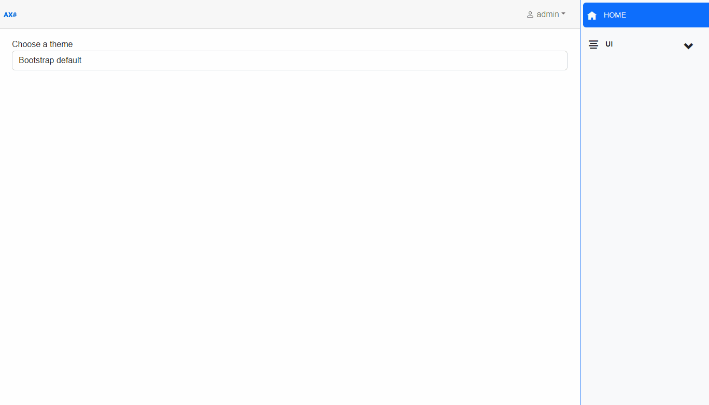

AXOpen.Themes
There is a way to change the look of the application by creating and using modified bootstrap files.
1. Modifying bootstrap
Each theme is a separate bootstrap file. To get the desired color theme, bootstrap's variables need to be modified before compilation.
Example of a file with modified variables:
$primary: #0a6105 !default;
$secondary: #13c70e !default;
$success: #0e9e0a !default;
$info: #f7f06d !default;
$warning: #ff8a00 !default;
$danger: #d33e43 !default;
$brand: #f7f06d;
$light: #f0f1ee !default;
$dark: #021301 !default;
$theme-colors: () !default;
$theme-colors: map-merge(
(
"primary": $primary,
"secondary": $secondary,
"success": $success,
"info": $info,
"warning": $warning,
"danger": $danger,
"error": $danger,
"brand": $brand,
"add": $primary,
"new": $info,
"edit": $primary,
"delete": $danger,
"nav": $secondary,
"change": $warning,
"save": $success,
"light": $light,
"dark": $dark,
),
$theme-colors
);
Besides changing the colors, the following css rules need to be added pre compilation for optimal look:
/* forms */
/* Reduce the default form-group bottom margin*/
.form-group {
margin-bottom: 0.25rem;
}
.form-control:focus {
border-color: $warning;
box-shadow: inset 0 1px 1px rgba(0, 0, 0, 0.075), 0 0 8px rgba($warning, 0.6);
outline: 0 !important;
}
.form-select:focus {
border-color: $warning;
box-shadow: inset 0 1px 1px rgba(0, 0, 0, 0.075), 0 0 8px rgba($warning, 0.6);
outline: 0 !important;
}
.valid.modified:not([type="checkbox"]) {
outline: 1px solid #26b050;
}
.invalid {
outline: 1px solid red;
}
.validation-message {
color: red;
}
/* set new margins and padding for small alerts*/
div.alert-sm .alert {
padding: 0.25rem 1.25rem;
margin-bottom: 0rem;
}
.nav-tabs .nav-link.active {
color: $warning;
}
.content {
padding-top: 1.1rem;
}
/* navigation */
.nav-menu .nav-link.active {
background-color: $primary;
color: $light;
}
.nav-menu .nav-link:hover {
background-color: rgba($primary, 0.7);
color: $light;
}
@media (min-width: 641px) {
.nav-menu {
border-left: 1px solid $primary;
}
}
2. Compiling bootstrap
Compile these files in the following order using the sass compiler:
@import "Bootstrap/scss/_functions.scss";
@import "Bootstrap/custom/_variables"; // modified variables
@import "Bootstrap/scss/bootstrap";
@import "Bootstrap/scss/_utilities";
@import "Bootstrap/scss/bootstrap-utilities.scss";
@import "Bootstrap/custom/_overrides"; // modified css rules
3. Using a theme
The custom compiled bootstrap files are stored in the wwwroot\css\custom folder. Add your custom compiled bootstrap to this folder. In order to be able to switch to your newly created theme, you need to add the name of the theme to the supportedThemes array in the Index.razor file:
private string[] supportedThemes = new[]
{
"New Theme",
"Bootstrap",
};
Upon selecting a new theme, redirection to the theme uri is triggered:
NavigationManager.NavigateTo($"/theme?theme={theme}", true);
Upon navigating to the theme uri, the ChangeTheme method of the ThemeController (an API controller) is called:
public async Task<ActionResult> ChangeTheme([FromQuery] string theme)
{
Response.Cookies.Append("theme", theme);
return Redirect("/");
}
This method creates a cookie with the name theme and the value of the selected theme. The cookie is then used to determine which stylesheet to use. The cookie expires after the browser session ends.
In the _Host.cshtml file, the css file of the selected theme is loaded based on the value of the theme cookie:
@switch (Request.Cookies["theme"])
{
case "New Theme":
<link rel="stylesheet" href="~/css/custom/new_theme.css" />
break;
case "Bootstrap":
<link rel="stylesheet" href="~/css/custom/bootstrap_default_custom.css" />
break;
default:
<link rel="stylesheet" href="~/css/custom/bootstrap_default_custom.css" />
break;
}
Make sure that the string name of your theme in supportedThemes array in Index.razor file matches with the correct case string in the switch statement in the _Host.cshtml file. In case of an unknown theme name from the theme cookie or when the app is opened for the first time (the cookie has not been created yet), the default bootstrap theme is loaded.
Theme changes in action:
